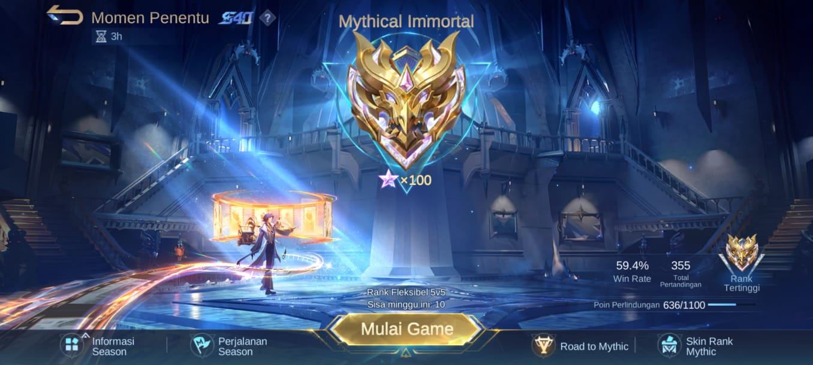
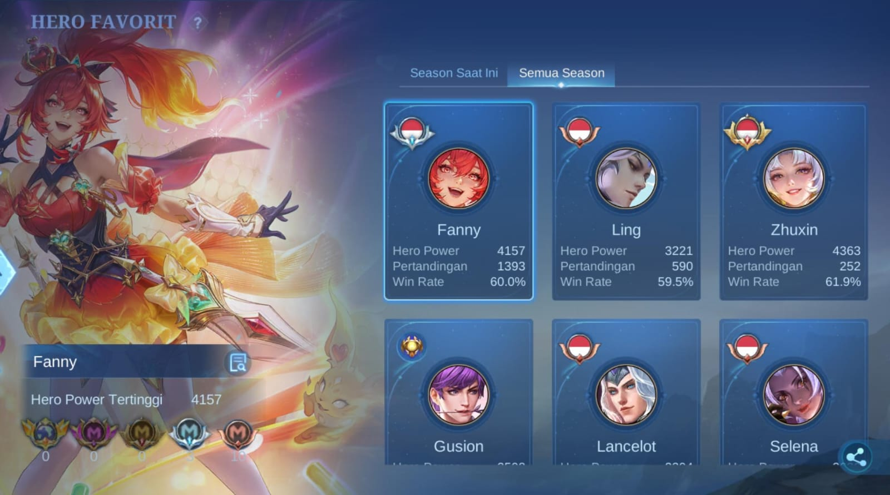
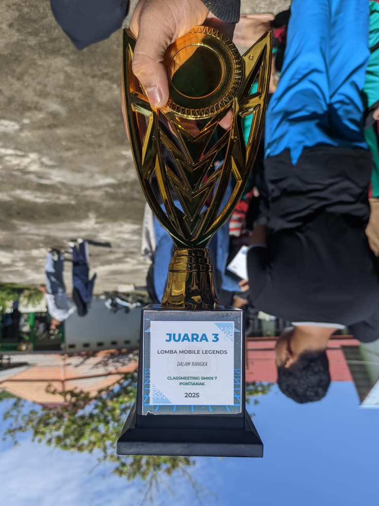

01 / ELEMENTARY SCHOOL
Sekolah Dasar
SD Negeri 06
SD
Halo! Saya Putra Azpriramansyah, Selamat datang di website portofolio saya. Website ini merupakan ruang digital untuk mengenal saya lebih dekat, melihat karya dan proyek yang saya kembangkan, serta menemukan berbagai informasi tentang aktivitas dan minat saya di bidang teknologi. Semua informasi penting saya rangkum di satu tempat agar lebih mudah diakses.
TikTok: @langit.guid | Instagram: @ptraaz_pri
AKU SIAPA?
Halo! Nama gua Putra Azpriramansyah, biasa dikenal sebagai Azpri. Gua mahasiswa S1 Sistem Informasi di Universitas Tanjungpura yang tertarik dengan dunia teknologi, web development, dan programming.
Di luar dunia teknologi, gua suka astrophotography, mengabadikan keindahan langit malam, dan bermain Mobile Legends. Website ini menjadi tempat untuk mengenalkan diri, minat, serta perjalanan gua.
Contact MeMY JOURNEY
Perjalanan pendidikan saya hingga saat ini.
SD Negeri 06
SDSMP Negeri 14 Pontianak
SMPSMK Negeri 7 Pontianak
Teknik Jaringan Komputer dan Telekomunikasi (TJKT)
SMK / TJKTPontianak, Kalimantan Barat
S1 Sistem Informasi
CURRENTLY STUDYINGBEYOND THE SCREEN
Dua dunia yang gua suka: mengabadikan keindahan langit malam dan menikmati persaingan di Land of Dawn.
CAPTURED BY GuideFs
Moments beneath the night sky.
.jpeg) 01 / MILKYWAY
01 / MILKYWAY
 02 / NIGHT SKY
02 / NIGHT SKY
.jpeg) 03 / NIGHT SKY
03 / NIGHT SKY
.jpeg) 04 / NIGHT SKY
04 / NIGHT SKY
 05 / NIGHT SKY
05 / NIGHT SKY
 JAN DIBACA MAH
JAN DIBACA MAH
← Geser untuk melihat foto lainnya →
EMEL
My journey on the Land of Dawn.

IMO hanyalah angka TIM RENDI GANTENG
TIM RENDI GANTENG
 CLASSMEET ERA
CLASSMEET ERA

FANNY BUNTAU← Geser untuk melihat foto lainnya →
MILESTONES & ACHIEVEMENTS
Explore my journey through certifications, technical expertise, and projects.
 CITY LEVEL
CITY LEVEL
Pencapaian keterampilan mengetik 10 jari tingkat kota di HOPE TeDe.
Tingkat Kota NATIONAL LEVEL
NATIONAL LEVEL
Pencapaian keterampilan mengetik 10 jari tingkat nasional di HOPE TeDe.
Tingkat Nasional
CLASSMEETPrestasi dalam kompetisi classmeet di sekolah.
Juara ClassmeetStruktur markup semantik web modern, standar W3C, performa SEO, dan fondasi halaman web yang terstruktur.
Desain responsif modern, Flexbox, CSS Grid, animasi UI, Glassmorphic styling, dan sistem tema dinamis.
ES6+ Scripting, manipulasi DOM interaktif, event handling, Canvas HTML5, dan logika theme switching.
Proyek-proyek mendatang sedang dalam proses pengembangan dan akan segera ditampilkan di sini.
GET IN TOUCH
Punya pertanyaan, ingin berdiskusi, atau sekadar menyapa? Hubungi gua melalui media sosial atau email.
GUESTBOOK
Tinggalkan pesan, kesan, atau sekadar sapaan untuk pengunjung lainnya.
Visitor Messages
0 pesanMemuat pesan...